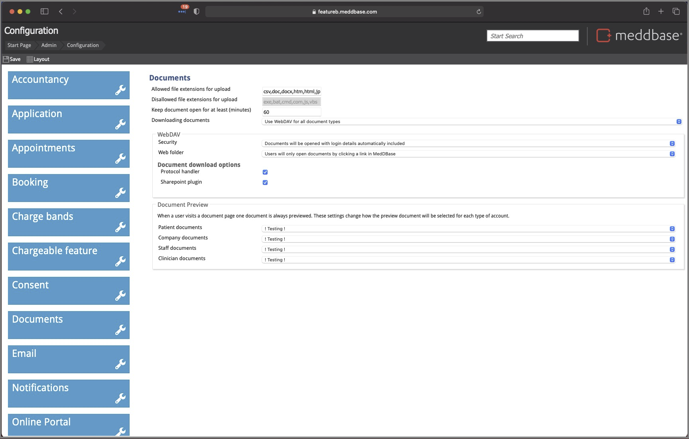
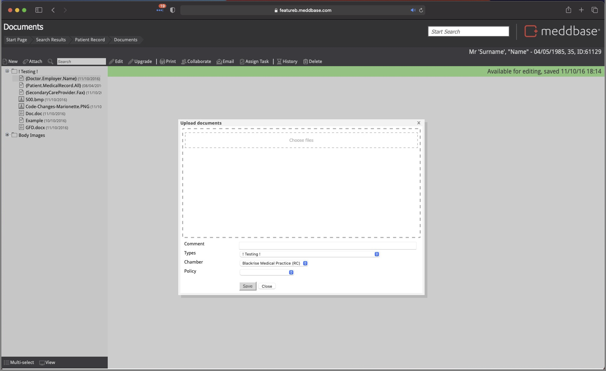
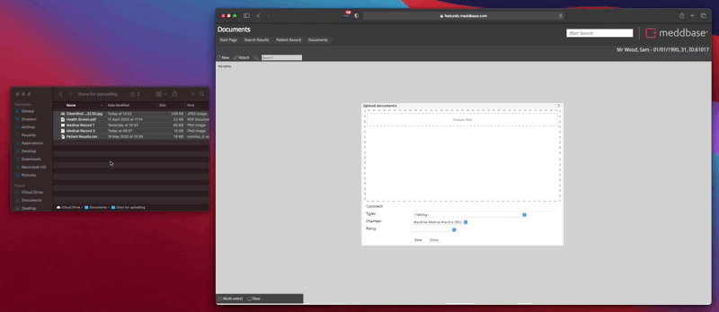
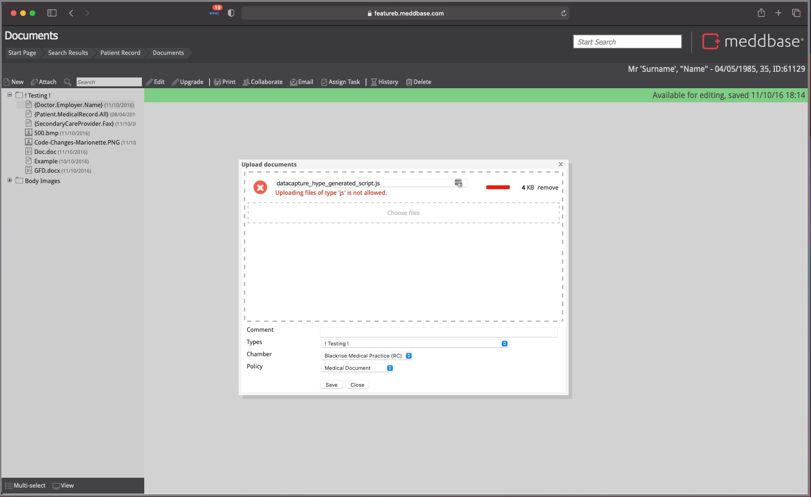
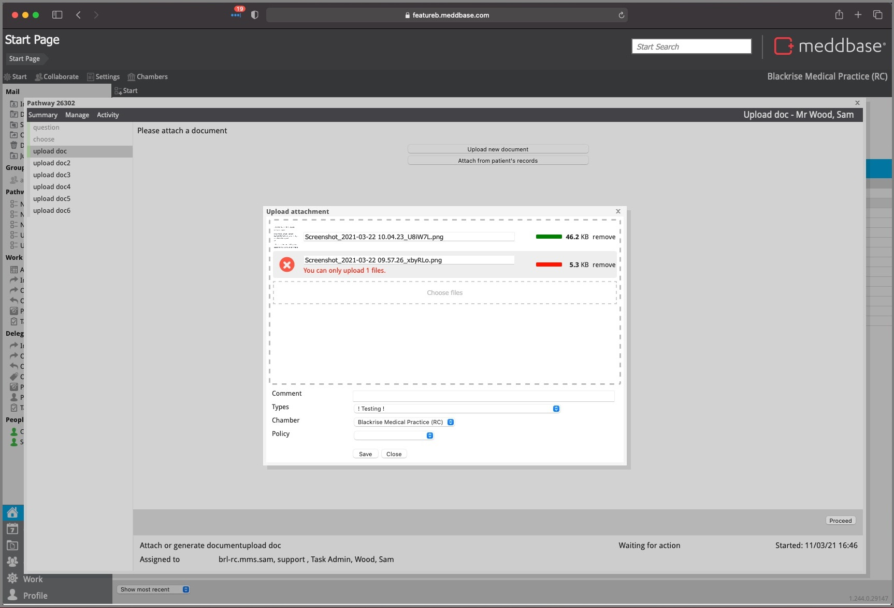

Meddbase has a mechanism for uploading documents using Drag and Drop functionality.
The system does not prevent the upload of documents with identical file names. Users should therefore ensure that where possible, to give files unique names to aid their correct identification by other users once uploaded to the Patient/Company/Medical Person/Non-medical Person document record(s).
To discuss how the feature behaves, how it can be configured, and what you should expect when using it.
For the most part, your Meddbase Chamber will be pre-configured to allow for document upload. But there are some settings that you may want to check and tweak as required.
Navigating to Admin > Configuration > Documents will show you a list of Allowed and Disallowed file extensions for upload:

The list of Disallowed extensions is not controllable, but you can choose to add or remove extensions from the Allowed extensions list to control what types of documents your users are able to upload.
There are a number of places where a user can upload multiple documents at once, including:
In these instances, clicking the Attach button will display a dialogue that will allow you to Drag and Drop documents into it for upload:

You can either simply Drag and Drop files anywhere in the dashed area, or click the Choose Files action which will let you choose files from your local File Explorer for upload.

After your files have finished uploading, you can choose to add a Comment on this dialogue, which will be saved to all the files included in the batch upload, as well as choosing a Document Type and Policy, which will both also be applied to all the files you upload.
After you have finished adding comments, and choosing the Document Type and Policy, clicking Save will finalise the document upload, and save the documents against the record you're uploading to.
It's important to note that until you click Save, the documents are not attached to the record. If you Cancel, or close the Tab, the documents in your upload will not be saved to the record.

Trying to upload a file of an unsupported type will present the above error message. To proceed with the upload of a batch of files that include a submission with an error like this, remove it from the batch by clicking the remove action to the right of the file.
There are some places in the application that will allow the upload of only a single document. These include:
The user experience in these scenarios is basically identical to situations where you can upload multiple documents. The only difference being that you'll get an error message if you try to upload more than 1 document.

Again, the simplest way to resolve the error is to press the 'remove' button on all but the 1 file you would like to upload.